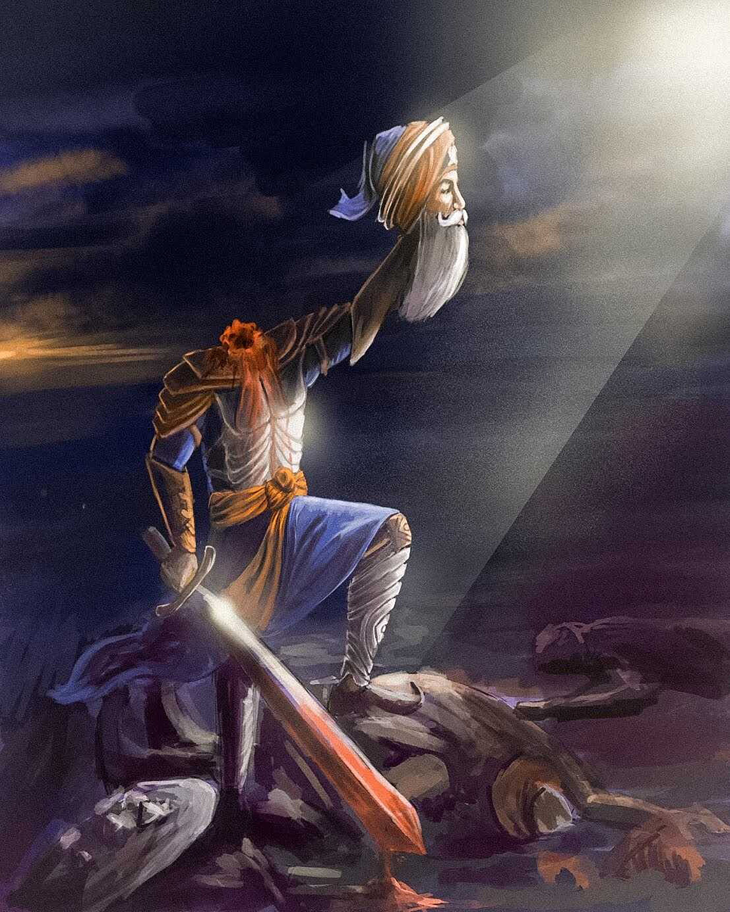
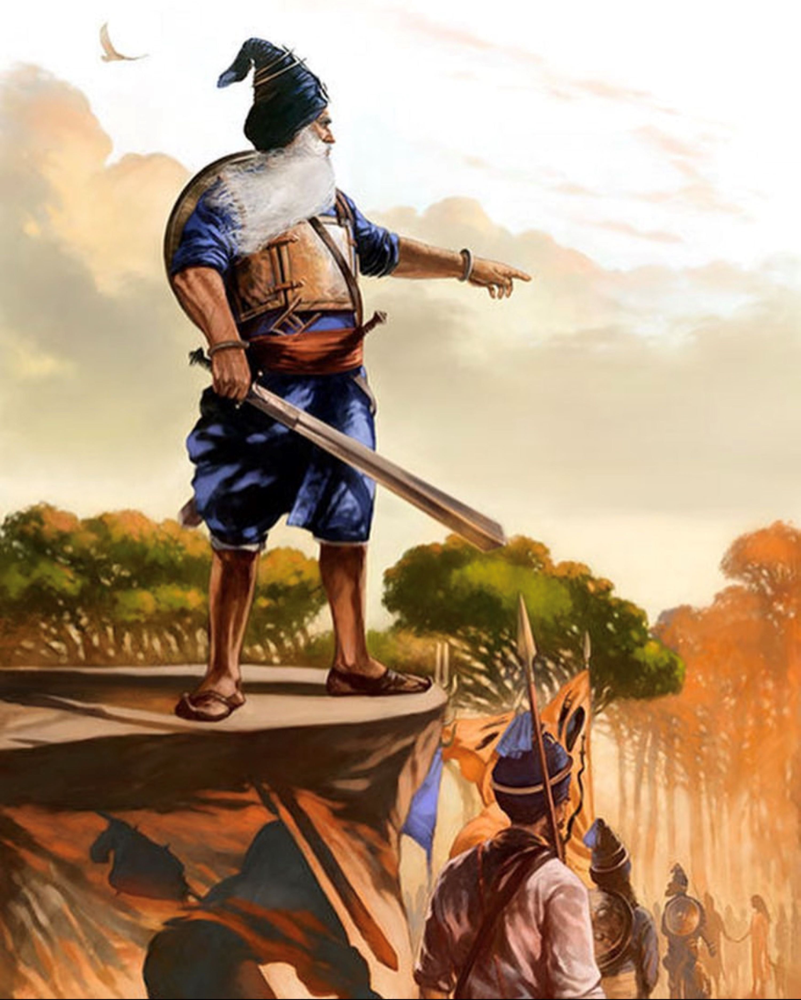

Baba Deep Singh
 
Baba Deep Singh (26 January 1682 - 11 November 1757) was a prominent Sikh religious
leader, warrior, and scholar. He is remembered for his bravery, devotion to Sikhi,
and his role in writing the DamDami Bir of Guru Granth Sahib.
Baba Deep Singh was born in the village of Pahuwind, located in present-day Amritsar
district in Punjab. Under the guidance of Guru Gobind Singh Ji and Bhai Mani Singh, he became well-versed in various languages, including Punjabi, Persian,
and Sanskrit. He played a crucial role in the defense of Anandpur Sahib, a fortified city that faced repeated attacks from Mughal forces.
One of the most notable events associated with Baba Deep Singh is his involvement in the
Battle of Amritsar in 1757. When news reached him that the Afghans had desecrated the Harmandir
Sahib (Golden Temple) in Amritsar, he took up arms and assembled a Sikh army to liberate
the temple. Despite being in 75 at the time, Baba Deep Singh fought valiantly
and led his forces into a fierce battle against overwhelming odds. It is said that he fought
with such determination that he continued to fight even after his head was severed from
his body. His Shaheedi and unwavering spirit have made him an iconic figure in Sikh
history. Baba Deep Singh is revered as a saint, warrior, and scholar by Sikhs worldwide.
His legacy symbolizes courage, devotion, and the willingness to make sacrifices in the
defense of Sikh principles and the sanctity of Sikh places of worship. His life continues
to inspire generations of Sikhs to uphold the principles of Sikhi and stand up against injustice.